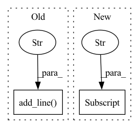

Pattern ID :15780

Before Change
import shutil
repo = ModelRepo("./test_models")
repo.add_line(DummyModel, "dummy_1")
repo.add_line(DummyModel, "00001")
self.assertTrue(os.path.exists("./test_models/dummy_1"))
self.assertTrue(os.path.exists("./test_models/00001"))
After Change
repo = ModelRepo("./test_models", DummyModel)
line1 = repo["dummy_1"]
line2 = repo["00001"]
self.assertTrue(os.path.exists("./test_models/dummy_1"))
self.assertTrue(os.path.exists("./test_models/00001"))
In pattern: SUPERPATTERN
Frequency: 3
Non-data size: 2
Instances
Fragment ID: 53328173
Project Name: oxid15/cascade
Commit Name: 981979e02c434b235aa67990c1d15f9f5ca40099
Time: 2022-04-23
Author: villeman.5@yandex.ru
File Name: tests/test_model_repo.py
M Class Name: TestModelRepo
N Class Name: TestModelRepo
M Method Name: test_repo(1)
N Method Name: test_repo(1)
M Parent Class: TestCase
N Parent Class: TestCase
M File Name: tests/test_model_repo.py
N File Name: tests/test_model_repo.py
M Start Line: 33
M End Line: 35
N Start Line: 33
N End Line: 36
'>
Before Change
def test_run():
repo = ModelRepo("./test_hv")
line0 = repo.add_line("0", DummyModel)
model = DummyModel()
model.evaluate()
After Change
def test_run(model_repo, dummy_model):
dummy_model.evaluate()
model_repo["0"].save(dummy_model)
hv = HistoryViewer(model_repo)
hv.plot("acc")
'>
Fragment ID: 53328172
Project Name: oxid15/cascade
Commit Name: 2f5ce85d297cf4975de845e44952c7783fcad0e6
Time: 2022-07-05
Author: villeman.5@yandex.ru
File Name: cascade/tests/test_history_viewer.py
M Class Name: AnonimousClass
N Class Name: AnonimousClass
M Method Name: test_run(2)
N Method Name: test_run(0)
M Parent Class:
N Parent Class:
M File Name: cascade/tests/test_history_viewer.py
N File Name: cascade/tests/test_history_viewer.py
M Start Line: 31
M End Line: 40
N Start Line: 28
N End Line: 32
'>
Before Change
repo = ModelRepo("./test_empty")
line0 = repo.add_line("0", EmptyModel)
model0 = EmptyModel()
model1 = EmptyModel()
After Change
def test_empty_model(model_repo, empty_model):
model_repo.add_line("test", EmptyModel)
empty_model.metrics = {"acc": 0.9}
model_repo["test"].save(empty_model)
hv = HistoryViewer(model_repo)
hv.plot("acc")
'>
Fragment ID: 53328171
Project Name: oxid15/cascade
Commit Name: 2f5ce85d297cf4975de845e44952c7783fcad0e6
Time: 2022-07-05
Author: villeman.5@yandex.ru
File Name: cascade/tests/test_history_viewer.py
M Class Name: AnonimousClass
N Class Name: AnonimousClass
M Method Name: test_empty_model(2)
N Method Name: test_empty_model(0)
M Parent Class:
N Parent Class:
M File Name: cascade/tests/test_history_viewer.py
N File Name: cascade/tests/test_history_viewer.py
M Start Line: 82
M End Line: 92
N Start Line: 44
N End Line: 49